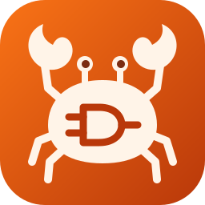
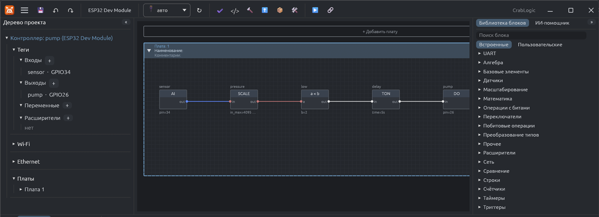
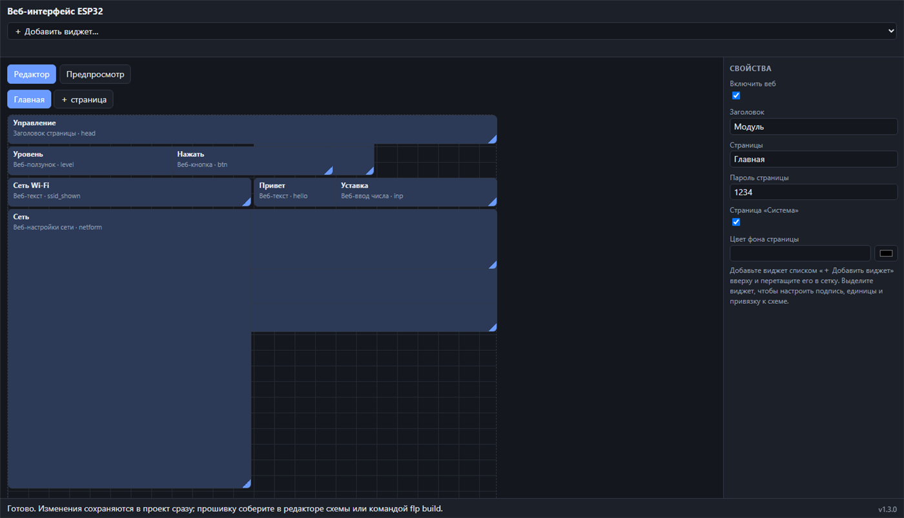

CrabLogic бета 1.3Визуальное программирование микроконтроллеров ESP32: рисуете схему из блоков (FBD), программа собирает прошивку, заливает её по USB и показывает живые значения на схеме. Ядро написано на Rust.
Скачать для Windows Демо в браузере Исходный кодПривычная для FBD раскладка: платы-листы, библиотека блоков справа, проверка схемы (типы, порты, входы без источника, циклы без памяти).
Прошивка собирается через arduino-cli и заливается по USB. Фоновая прекомпиляция ускоряет повторные сборки.
Живые значения на схеме, уставки на лету, форсировка сигналов. Проект можно хранить в памяти платы.
Веб-страница платы с виджетами, графиками и сетевой формой собирается в отдельном конструкторе и хранится в проекте.
Wi-Fi, Ethernet, MQTT, NTP, Modbus RTU и TCP.
Блоки — это файлы: библиотека расширяется без перекомпиляции, блоки можно писать на любом языке через WASM. Есть ИИ-помощник и MCP-сервер.


CrabLogic.zip со страницы релиза и распакуйте.crablogic-editor.exe. Если нужно, программа предложит скачать arduino-cli и ядро ESP32 сама.Для сборки прошивок нужно ядро ESP32 для Arduino (версия 3.3.12). Программа скачивает его сама. Если ставите ядро через arduino-cli или Arduino IDE, добавьте в список адресов менеджера плат (Board Manager URLs) такой адрес: https://espressif.github.io/arduino-esp32/package_esp32_index.json.
Для офлайн‑установки возьмите готовые пакеты со страницы релиза:
| Файл | Состав | Размер |
|---|---|---|
| CrabLogic-toolchain-esp32.7z | arduino-cli и ядро для ESP32 | 224 МБ |
| CrabLogic-core-esp32s2.7z | ESP32‑S2 | 22 МБ |
| CrabLogic-core-esp32s3.7z | ESP32‑S3 | 47 МБ |
| CrabLogic-core-esp32c3.7z | ESP32‑C3 | 224 МБ |
Распакуйте их в папку программы рядом с crablogic-editor.exe; дополнительные пакеты нужны только для этих плат.
Версия 1.3 — бета. Основная плата: ESP32 DevKit; работа с ESP32‑C3 проверена на железе. Программа развивается одним автором, сообщения об ошибках приветствуются в Issues.